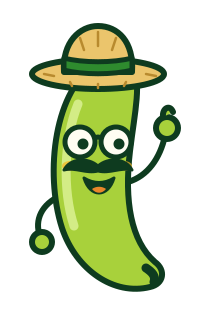

Don Patacón: propuesta de marca
Boceto para revisar, no es el arte final. La palabra está escrita con la fuente; en la versión final se convierte a trazos para que el logo funcione sin depender de ella.
Logo

DonPatacón
DonPatacón
DonPatacón
El patacón crocante es el sello y Don Patacón se asoma por detrás. El sello solo, sin la palabra, sirve como ícono del sitio y foto de perfil en redes. El eslogan "Más crujiente y sabrosón" queda fuera del logo y se usa como titular.
Colores
Monte
#0E3B1FTexto, contornos, fondos oscurosHoja
#2E8B2EHojas, pie de páginaBiche
#A8D13BMascota, resaltesPatacón
#F5B41FBotones, preciosTostado
#C9711ADetalles mínimos, nunca textoPulpa
#FFF3C4Fondo de páginaSolo verdes y amarillos, como se pidió: el vinotinto del local y del empaque queda fuera del sitio. El fondo es el color de la pulpa del plátano, no un crema genérico.
Tipografía
Más crujiente y sabrosón
Chango: titulares, nombres de platos y precios. Gruesa y redonda, como un letrero pintado.
Fríjoles, arroz, huevo frito, chicharrón, chorizo y guacamole. Verde crocante o maduro dulce.
Baloo 2: todo lo demás. Redondeada y muy legible en el celular, con tildes y eñes completas.
Mascota
Cartoon plano con contorno grueso, sombrero de paja con cinta, gafas y bigote, como la original. Se puede animar por partes: parpadea, saluda y el sombrero brinca.
Reglas
- El borde crocante del patacón es el recurso de la marca: fotos, sello y bordes de secciones. Nada de tarjetas rectangulares iguales.
- Contornos gruesos en verde monte y sombras duras, sin desenfoque, como una calcomanía.
- Las fotos van sin el texto de las publicaciones de redes: solo la comida.
- Una sola animación protagonista por página. El resto, quieto o con respuestas cortas a lo que hace la persona.